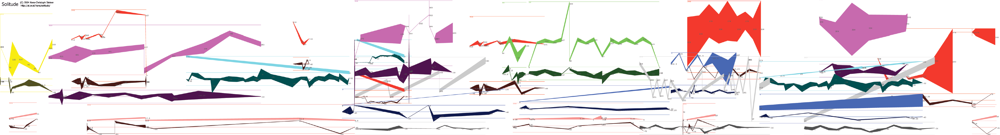
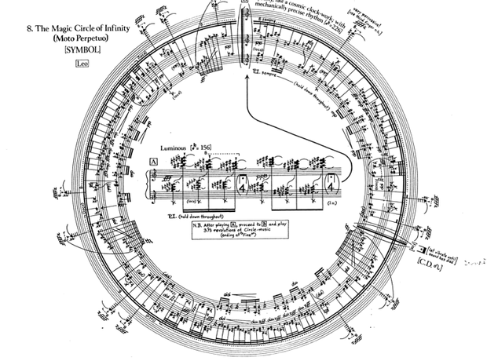

La escritura musical tradicional fue desarrollada para anotar con precisión las notas y los valores de duración de las piezas musicales. Muchas veces, cuando interviene el azar, hace falta encontrar nuevas maneras de anotar la música. Acá podés ver dos ejemplos.
 Si tenés un piano de cola y 13 pelotas de ping pong podés jugar un juego que se llama La mariposa y su efecto caótico. Dos jugadores intentan sacar del piano las pelotas que tira adentro el tercer jugador.